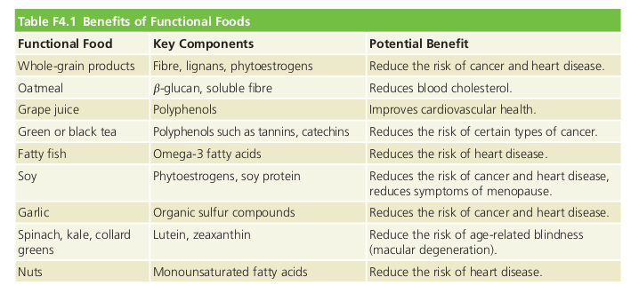

Focus on Phytochemicals
Pages(402-408)
Textbook Readings
Functional foods: Demonstrated to have physiological benefits and/or reduce the risk of chronic disease beyond basic nutritional functions.  Phytochemicals: Health-promoting substances in plant foods Zoochemicals: Health-promoting substances in animal foods(i.e meat, dairy, tc)
Phytochemicals in the canadian diet
- Include hundreds, thousands of active non-nutritive chemicals found in plants.
- Some plant chemicals can be toxic(chemicals in rhubarb leaves can cause symptoms including: abdominal pain, nausea, vomiting. Stems have lower toxins and are safe to eat.)

Phytoestrogens: (soy) structure similar to 4estrogen and block or mimic estrogen action. Phylosterol: resemble cholesterol in structure, competes with it for absorption from gastrointestinal tract and thus reduces the presence of blod cholesterol
Carotenoids
- Caretonoid gives fruits/vegetables a yellow-orange colour(carrots, sweet potatoes, acorn squash, apricots, mangoes). Other caretonoid-containing fruits are masked by green colour of leafy greens.
- High intake of carotenoid-containing fruits and vegetables has been associated with reduced risk of certain cancers, cardiovascular diseases, and age-related eye diseases. Macular degeneration is Leading cause of blindness in adults over 55. Caretonoids help with that. cause of blindness in adult
- Have antioxidant properties, some have vitamin A activity.
Polyphenols
- characterized structurally by presence of phenolic rings.
- Give blue and red colours to blueberries, raspberries, and red cabbage. Give pale yellow colour to potatoes, onions and orange rind.
- Polyphenolic compounds of green tea have been widely studied and may protect against cancer and heart disease.
- Polyphenolic effect of berries may have proactive effect on cardiovascular health.
- Polyphenolic compound in grapes and wine, resveratrol, may be linked to increased longevity and reduced risk of cancer and heart disease
- Found in fruits, vegetables, wine, grape juice, chocolate and green tea.
Phytoestrogen
- Special polyophenolic compounds in plants, that have chemical structures simular to human hormone estrogen, especially after modification by human gut flora.
- Believed to interrupt cancer developemnt and affect health by binding to estrogen receptors on cells and blocking or altering estrogen functions.
- Include isoflavones which are found in soybeans, flaxseed, and barley, and may protect against cancer and osteoporosis.
Indoles, Isiothiocyanates, and Alliums
Cruciferous vegetables
- cruciferous vegetables such as broccoli, cauliflower, brussel sprouts, cabbage, and greens like mustard, collards are a good source of sulfur-containing phytochemicals.
- Stimulate activity of enzymes that detoxify carcinogens
Sulfur compounds
- Garlic, onions, leeks, chives, and shallots contain sulfur compounds.
- Boost activity of cancer-destroyng enzyme systems, protect against oxidative damage, defend against heart disease by lowering blood cholesterol, blood pressure, and platelet activity.
- Prevents bacteria in the gut from converting nitrates into nitrites, which can form carcinogens.
Chocolate
- Constains chemical compounds that can give a mood boost. Causes brain to produce natural opiates, which dull pain and increase well-being.
- Can mimic effects of THC - causing a chocolate high.
- Has compounds which raise blood pressure and blood sugar, which can incresae alertness and contenment.
- Contains caffeeine and related compounds that make us feel more alert.
- Dark chocolate contains polyphenolic antixodiants, which may protect against heart disease and other health problems. COntains more antioxidants than red wine or blueberries.
- POlyphenols in dark chocolate improve arterial function, lower blood pressure, and improve insulin sensitivity.
- Added sugar and cocoa butter dilutes concentration of phytochemicals, and increases caloric content.
- Half of the fat in cocoa butter is saturated far, which may increase the risk of cardiovascular disease.
- Light chocolate doesn't contain as many phytochemicals as dark chocolate, and white chocolate contains no phytochemicals at all, since it doesn't have any cocoa.
- Dark chocolate, then, made from 70% or more cocoa, provides minerals and antioxidants that may reduce disease risk. If additional research confirms this beneficial effect, then dark chocolate would qualify as a functional food.
Choosing a Phytochemical-rich Diet
- Difficult to make quantitative recommendations for intake of specific phytochemicals, since
- Choose diet based on plant foods. Impact of the total diet is more significant than that of any single phytochemical.
- A diet high in plant sterols, soy, almonds, and foods like oats, barley, psyllium, okra and eggplant(high in soluble fibre) lowered cholesterol as much as prescription medication.
- Eat green and orange vegetables daily
Grains
- Grain contains as many if not more phytochemicals and antioxidantas than fruits and vegetables.
- Whole grains are rich in antioxidant phytochemicals,
Plant Proteins
- Phytochemical-rich soybeans and flaxseeds are great sources of protein, and legumes like nuts, and seeds are high-protein foods that make important fibre and phytochemical contributions.
- Recommend to choose beans, peas, nuts, and seeds more often.
Lecture